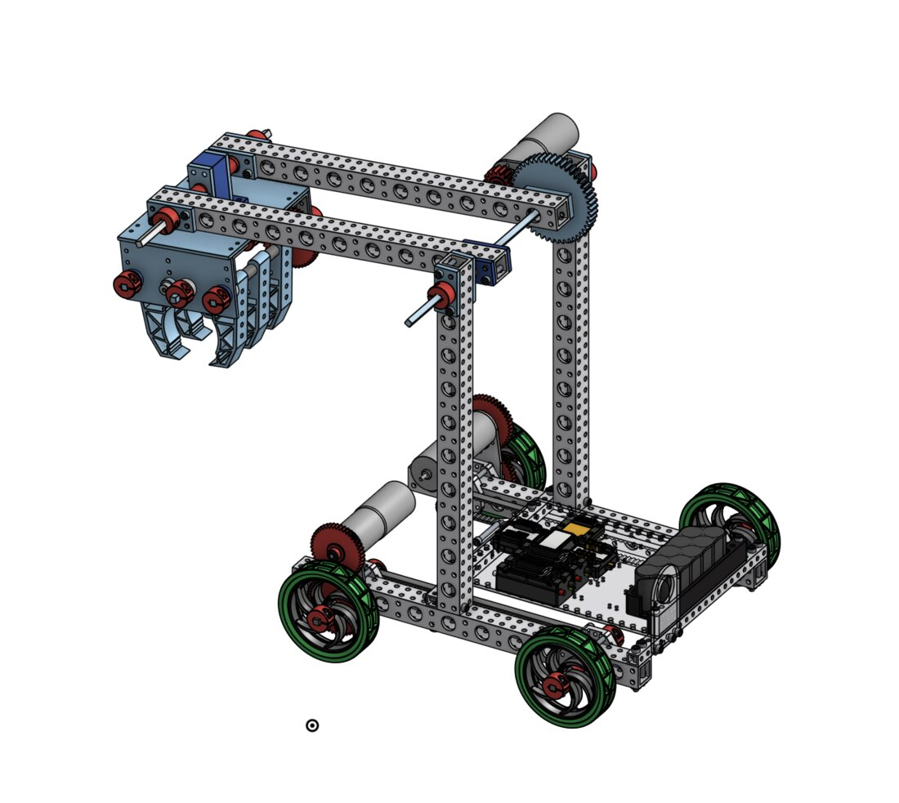
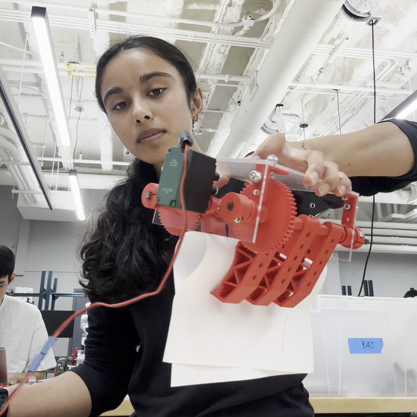
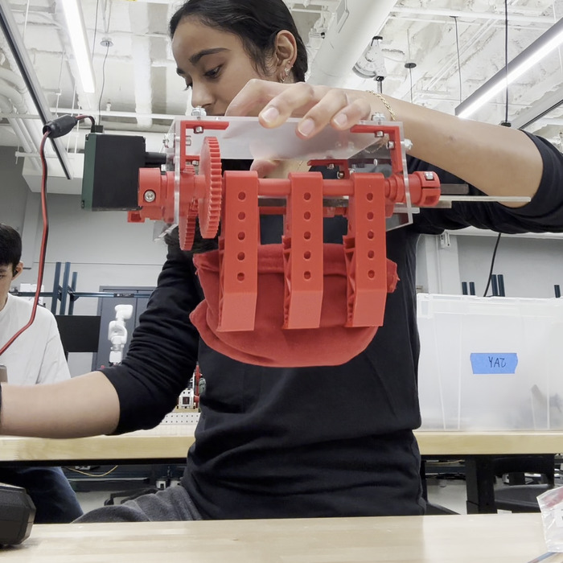
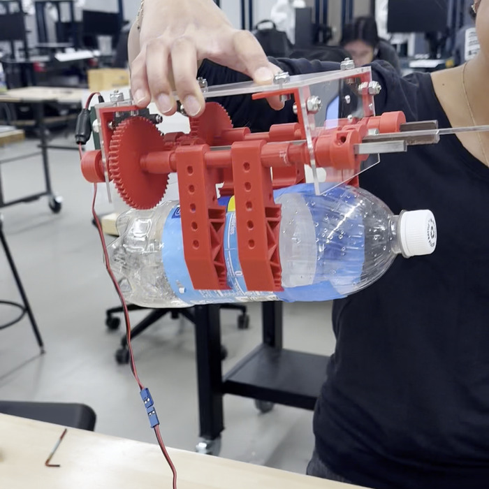
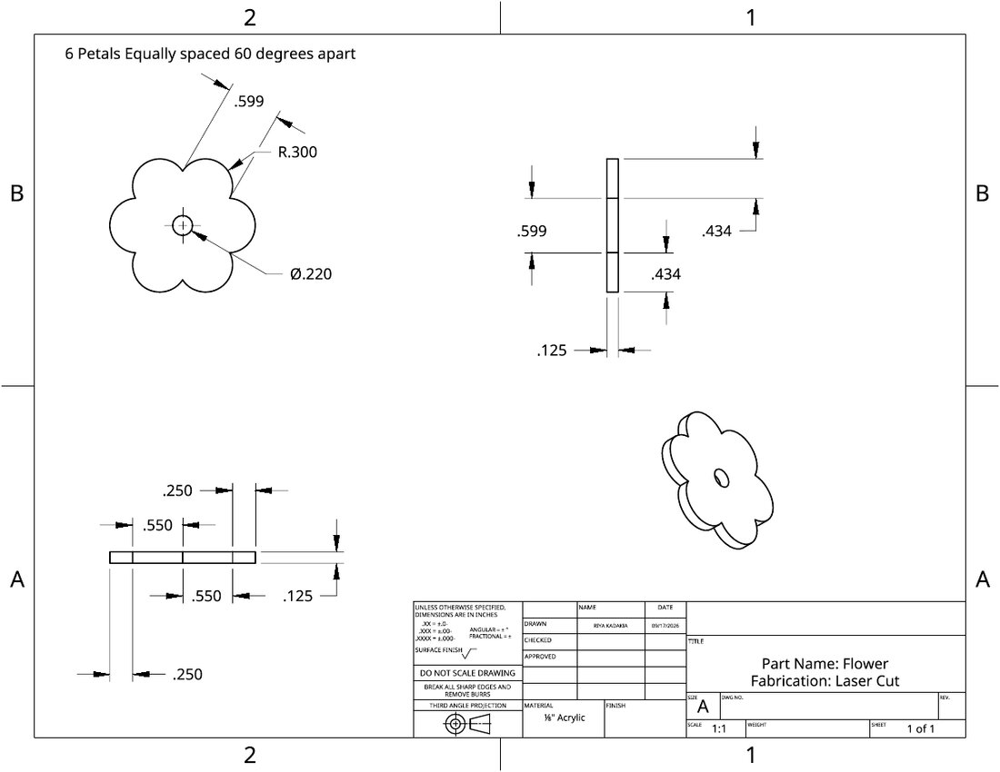

Teleoperated Sorting Robot

The challenge
Build a robot that picks up three very different objects (a flat sheet of paper, a ~450 g beanbag, and an empty 1-liter soda bottle) and drops each into its own bin up to 20 inches tall. The robot is driven by a person with a controller, so the design goal is to make picking things up as easy and repeatable as possible for the driver.
Design
- 4-bar parallel lift: two parallel arms keep the gripper level at every height, so the driver only has to line up the robot's base. That cuts alignment to two directions (forward/back, left/right).
- Gear-driven claw: one motor drives a pair of meshed gears, so both sides of the claw open and close together.
- Three curved fingers per side: staggered fingers interleave to trap flat paper, and their curved profile cups the beanbag and bottle. One end effector handles all three objects.
- Alignment plate: a low plate on the front lets the driver push the beanbag or bottle against it to center the object under the claw. The bottle gets knocked over first and grabbed lying down.
- Controls: arcade drive, with buttons for manual lift and claw control plus planned encoder presets for ground, carry and dump heights.
I chose this over a single-pivot arm (simpler, but the claw tilts as it rises) and a roller intake, using a weighted decision matrix: 4-bar 19, single pivot 18, rollers 14.
Sizing the motors
- Lift: worst case is the beanbag held out on a horizontal 15 in (0.38 m) arm: 0.45 kg × 9.81 m/s² × 0.38 m ≈ 1.7 N·m before the weight of the arm and gripper. A 5:1 gear reduction gives about 10.5 N·m, plenty of margin. With a 14 in pivot, the arm must rise at least 60° to clear a 20 in bin.
- Gripper: holding the beanbag by friction needs about 1.44 N·m. A 50:15 gear pair (≈3.3:1) keeps the motor well below stall, with hold mode and a current limit to avoid overheating.
- Stability: with the arm raised and loaded, the center of mass has to stay inside the wheelbase. A counterweight is the backup plan.
Gripper prototype
I built the end effector first and tested it on its own before mounting it on the lift. The fingers, spacers and connectors are 3D printed in PETG, the gears are printed in PLA, and the side and top plates are laser-cut ¼″ acrylic.



Gripper parts
| Part | Qty | Material | Made by |
|---|---|---|---|
| Gripper fingers (4″ × 1.3″) | 6 | PETG | 3D printing |
| Spur gears (50T, 15T) | 2 + 2 | PLA | 3D printing |
| Spacers and L-connectors | 17 | PETG | 3D printing |
| Side boards (5″ × 2.56″) and top board (6.25″ × 5″) | 2 + 1 | ¼″ acrylic | Laser cutting |
| Axles (¼″ and ⅛″) | 3 + 1 | Machined | |
| 10-32 screws, shaft collars | 8 + 6 | Lab stock |
Skills from the course labs
- Electronics: soldered the robot's main power switch with XT30 connectors and heat shrink, then verified it with continuity, resistance and voltage tests (12.77 V on, ~0 V off).
- Materials: measured Young's modulus for about a dozen materials with a cantilever-beam test (dial indicator + force gauge), and broke PETG at 15% vs. 100% infill, plywoods, acrylic and polycarbonate to compare how they fail.
- CAD and fabrication: modeled a multi-part assembly and produced dimensioned technical drawings for laser-cut and 3D-printed parts.

Next steps
- Mount the gripper on the 4-bar lift and test each object on the full robot.
- Add the alignment plate, then full three-object runs and driver practice before the final demo in December.